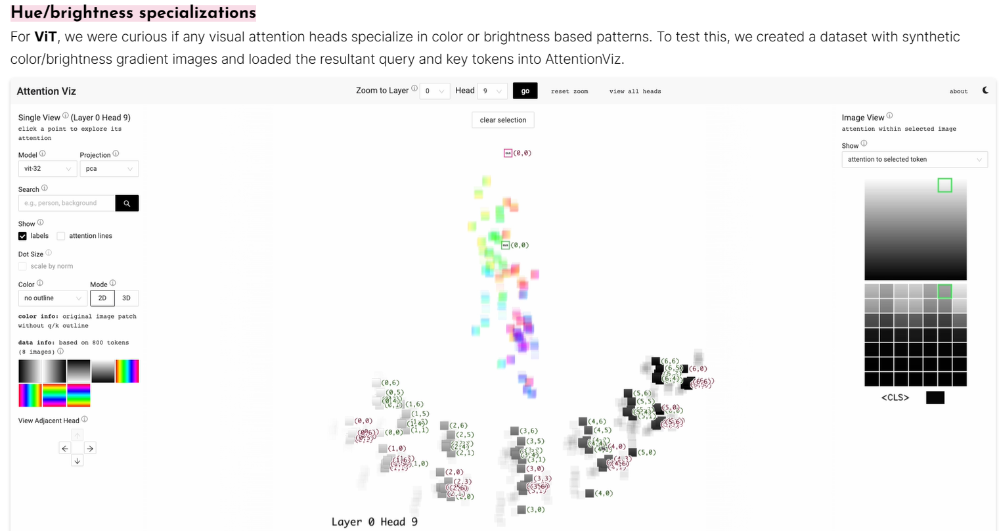
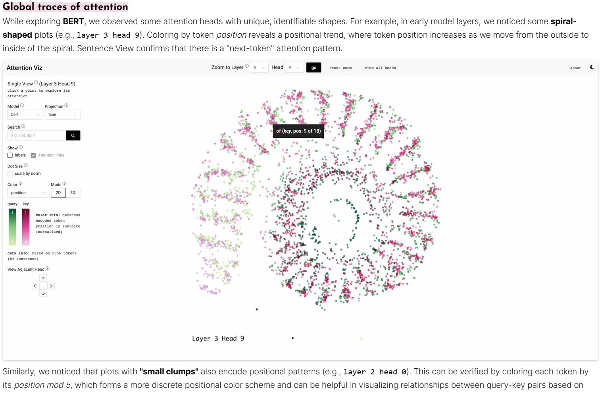
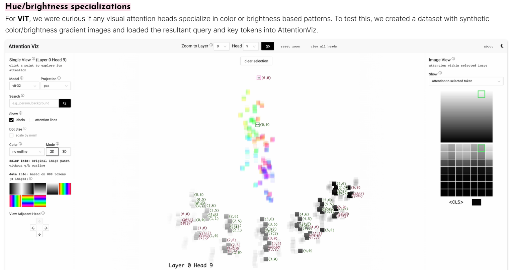
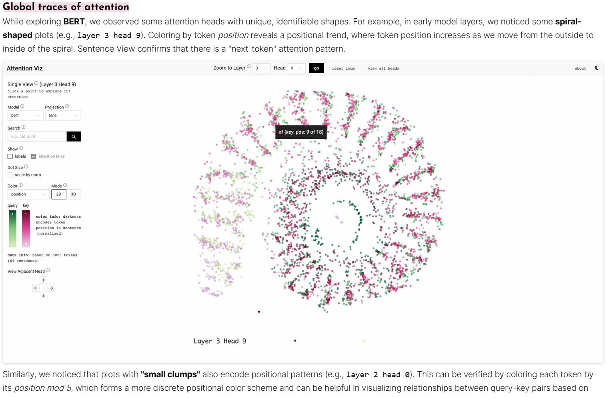
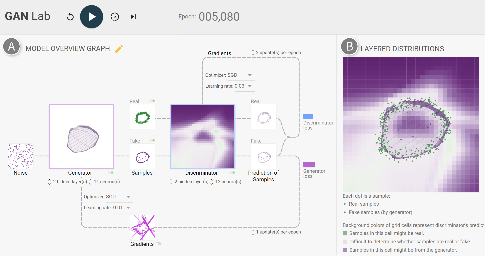
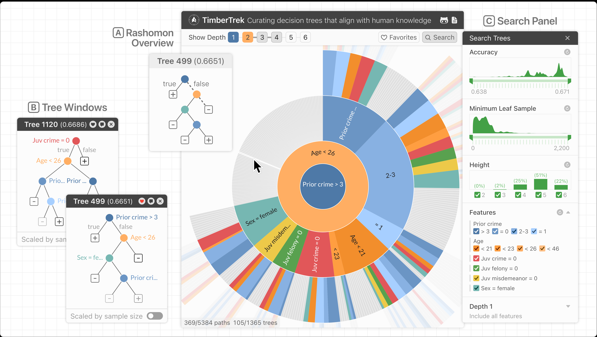
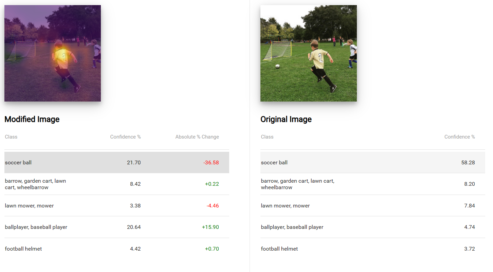
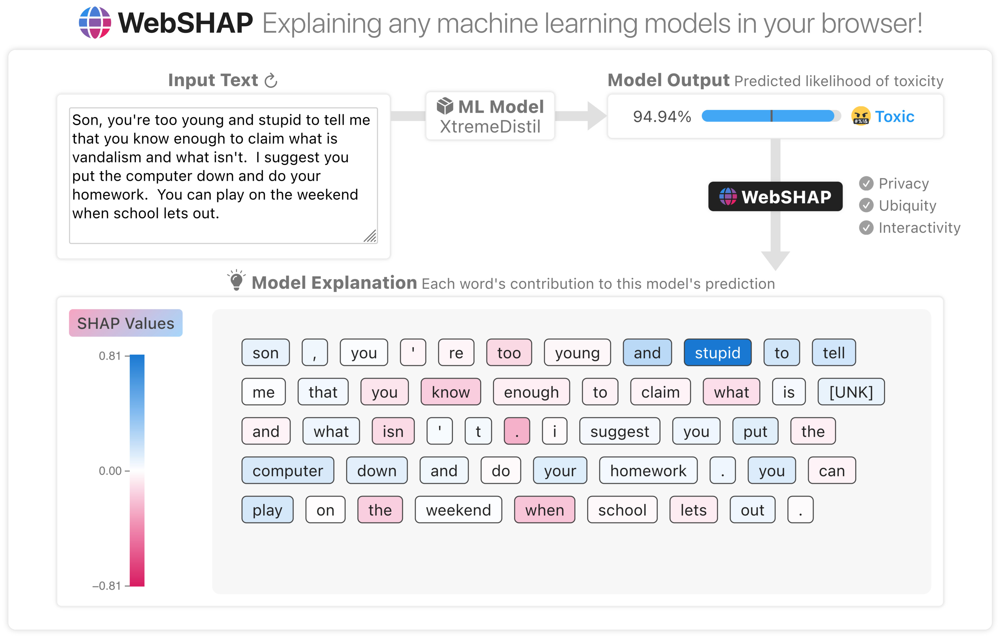

Demos and Playgrounds
Anomagram
Anomagram is an interactive experience built with Tensorflow.js to demonstrate how deep neural networks (autoencoders) can be applied to the task of anomaly detection.
DRLViz
VisualML
Visual Machine Learning contains a set of Machine Learning and Deep Learning interactive visualisation demos for developing intuition. These demos are developed using TensorFlow.js and can be executed directly in your browser.
Live demo links:
RNN Explainer
(Recommendation: “try this demo with a screen which is larger than 8 inches and has a minimum resolution of 1280x720”)
Hello.
AttViz

BertViz
BertViz is an interactive tool for visualizing attention in Transformer language models such as BERT, GPT2, or T5. It can be run inside a Jupyter or Colab notebook through a simple Python API that supports most Huggingface models. BertViz extends the Tensor2Tensor visualization tool by Llion Jones, providing multiple views that each offer a unique lens into the attention mechanism.
The repository link contains information about usage as well as several links to interactive tutorials for use in Colab.


attention-viz
Attention Viz is an interactive tool that visualizes global attention patterns for transformer models. To create this tool, we visualize the joint embeddings of query and key vectors.
 



attentions

| Implementation List | |
|---|---|
| Name | Citation |
| Additive attention | Bahdanau et al., 2015 |
| Dot-product attention | Luong et al., 2015 |
| Location-Aware (Location Sensitive) Attention | Chorowski et al., 2015 |
| Scaled Dot-Product Attention | Vaswani et al., 2017 |
| Multi-Head Attention | Vaswani et al., 2017 |
| Relative Multi-Head Self Attention | ZihangDai et al., 2019 |
CNN Explainer
An interactive visualization system designed to help non-experts learn about Convolutional Neural Networks (CNNs)
Diffusion Explainer

Wizmap
The repository includes an interactive notebook containing instructions for using your own embeddings with WizMap.
WizMap is a scalable interactive visualization tool to help you easily explore large machine learning embeddings. With a novel multi-resolution embedding summarization method and a familiar map-like interaction design, WizMap allows you to navigate and interpret embedding spaces with ease.

 |
 |
 |
| DiffusionDB Prompts + Images | ACL Paper Abstracts | IMDB Review Comments |
| 1.8M text + 1.8M images | 63k text | 25k text |
CLIP Embedding |
all-MiniLM-L6-v2 Embedding |
all-MiniLM-L6-v2 Embedding |
GanLab

TimberTrek

GAM Coach
.png)

Interactive Classification
The live demo includes a “tour”-style tutorial.
Interactive Classification allows you to explore how computers see by modifying images.

WebSHAP

Live Demo List (see Repository README.md for more info)
- Financial ML model for predictive classification

- Convolutional NN for image classification

- Transformer-based text classifier 